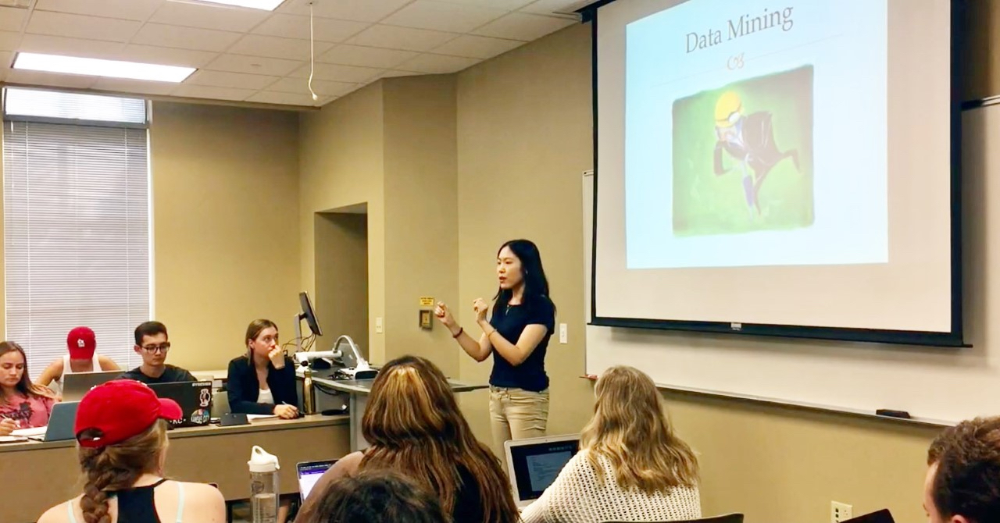

I have two and a half years of teaching experience in the United States, in which I have solo-taught Strategic Communication Research for one year.
My teaching philosophy is centered around the idea that knowledge is best absorbed by students and most beneficial when it can be applied to real-world situations.
Therefore, in my teaching, I focus on the hands-on skills needed to work in a professional environment, such as account management skills,
marketing research skills, and journalist photo, audio, and video editing skills. My teaching is heavily influenced by my research in
strategic health communication and five years of professional experience in the advertising and magazine fields.

List of Courses Taught
- Instructor of Record Fall 2020 (Online)
JOURN 4952 Strategic Communication Research Methods
University of Missouri, School of Journalism
- Instructor of Record Spring 2020 (In-person)
JOURN 4952 Strategic Communication Research Methods
University of Missouri, School of Journalism
- Teaching Assistant (Grading and Lecturing) Fall 2019 (In-person)
JOURN 4952 Strategic Communication Research Methods
University of Missouri, School of Journalism
- Teaching Assistant (Grading and Lecturing) Spring 2019 (In-person)
JOURN 2150 Fundamentals of Multimedia Journalism
University of Missouri, School of Journalism
- Teaching Assistant (Grading and Lecturing) Fall 2018 (In-person)
JOURN 4952 Strategic Communication Research Methods
University of Missouri, School of Journalism